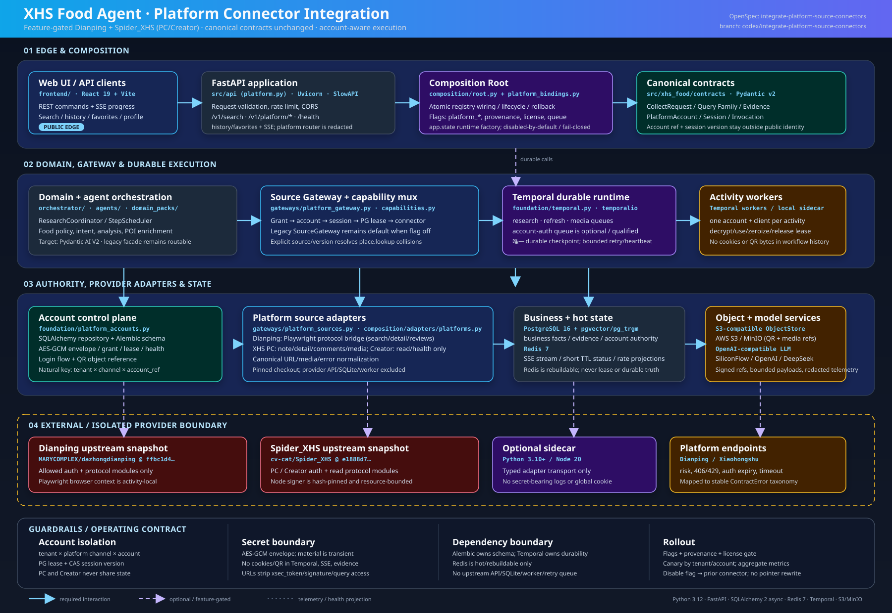

Web UI / API 客户端
frontend/ · React 19 · Vite · Zustand
浏览器调用 REST，并通过 SSE 接收进度、断线重放和终态快照。
- 运行：浏览器/静态前端开发服务器
- 边界：只持有公开会话 ID，不持有平台 Cookie
OpenSpec integrate-platform-source-connectors · branch codex/integrate-platform-source-connectors · 版本化、可回滚、按租户/平台账号隔离

浏览器调用 REST，并通过 SSE 接收进度、断线重放和终态快照。
统一搜索、历史、收藏、用户和健康接口；负责输入校验、CORS、限流和事件流。
app 容器，端口 8000（release 映射 18000）账号注册、登录/重认证、QR 状态、QR presentation、取消和 readiness 路由。
credential_refapp.state.platform_runtime_factory 注入 authority/codec/workflow；缺失时返回 503 disabled唯一负责注册表、生命周期、feature flag 和依赖 readiness；新平台注册在独立 platform registry。
xhs_compat 不变CollectRequest、Query Family、Evidence 保持兼容；账号引用和会话版本位于独立 invocation envelope。
ContractError 分类ResearchCoordinator、StepScheduler、Food Pack、意图解析、评论分析和 POI 补充组成业务流水线。
先授权再取账号/会话，获取 PG lease 后构造一次性 connector；按 source/version 显式解决 capability 冲突。
唯一持久化执行引擎；Research、Refresh、Media 队列隔离，Account-auth 队列为可选资格化队列。
Activity 内只创建一个账号对应的 provider client；同步上游调用放入线程或隔离进程。
把 HTTP 命令转换为 account-scoped login use case；校验 principal、grant、幂等键和 opaque credential handle。
WorkflowPort 或本地 qualification coordinatorPostgreSQL/Alembic 管理账号、会话、登录流、grant、lease、health。自然键为 tenant × channel × account。
dianping、xhs_pc、xhs_creator业务事实、Evidence、账号 authority 和 schema readiness 的唯一持久化来源；迁移只能由 Alembic 执行。
postgres 与一次性 migrate短期会话窗口、SSE stream、登录状态投影、限流和可重建热数据。
redis 服务；AOF 可用于重启恢复投影二进制介质引用和短 TTL QR 对象；生产使用 S3，开发/CI 使用 MinIO。
复用已审核快照的 auth/search/detail/reviews 协议模块，Playwright context 按 Activity 创建和销毁。
dianping；能力：place.lookup、reviews.search、media.refs规范化 note search/detail/comments/media，分页受限，URL 去除 xsec_token 等 access query。
xhs_pc 的签名器/会话不与 Creator 共享当前只注册账号自有内容读取和健康探针；发布、上传、排期和业务 API 明确未注册。
xhs，账号 channel 单独为 xhs_creator外部响应只在 adapter 边界出现；LLM 可配置 SiliconFlow/OpenAI/DeepSeek，旧高德 place capability 保持兼容。
| 配置 | 默认 | 作用 | 缺失依赖时 |
|---|---|---|---|
MODULAR_PLATFORM_CONNECTORS_ENABLED | false | 平台 registry 总开关 | 保持 legacy 路由 |
MODULAR_PLATFORM_DIANPING_ENABLED | false | 启用 Dianping source binding | readiness=dependency-unavailable |
MODULAR_PLATFORM_XHS_ENABLED | false | 启用 XHS PC/Creator channel | 不回退为隐式新 provider |
MODULAR_PLATFORM_LOGIN_ENABLED | false | 请求登录控制面 | 需 auth queue、authority、codec、login service |
MODULAR_TEMPORAL_ACCOUNT_AUTH_ENABLED | false | 启用独立 account-auth worker | manual-import-only / disabled |
MODULAR_PLATFORM_PROVIDER_MODE | in_process | 协议模块进程内；可切 sidecar | sidecar 未注入 transport 则 fail-closed |
app.state.platform_runtime_factory | 未设置 | 由部署/测试显式注入 authority、codec、factory、workflow、ObjectStore | 未设置时不构造 provider 或内存账号 authority；平台 API 返回 disabled |
MODULAR_PLATFORM_PROVENANCE_REF + license ref | 空 | 绑定上游 SHA、依赖 digest、审批记录 | production/commercial activation blocked |
| 边界 | 允许 | 禁止 |
|---|---|---|
| 账号隔离 | PG natural key tenant × channel × account_ref、grant、lease、CAS | 环境级 Cookie、进程全局 profile、跨平台复用 session |
| 秘密 | AES-GCM ciphertext、key ref/version、digest、opaque flow/object ref | Cookie、QR bytes、Authorization、signer input 出现在 Temporal/SSE/evidence/log |
| 上游代码 | allow-list 的 protocol/auth 模块或 typed sidecar | FastAPI app、SQLite task table、CLI writer、独立 worker/retry queue |
| 回滚 | 关 flag、停止新 activity、排空队列、保留历史 | 重写 Query Family/public pointer、破坏性删除账号或 Evidence |